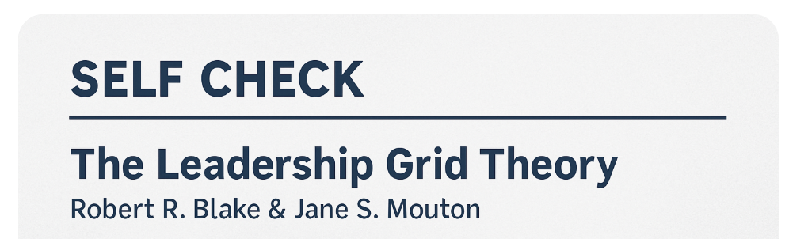
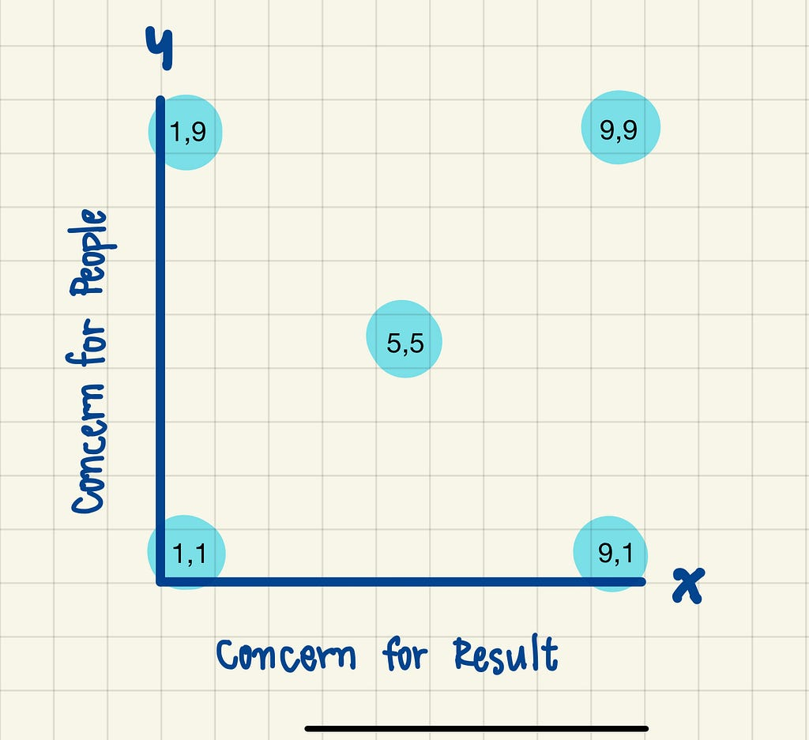

Leadership da series~1.Self Check
People join companies, they leave managers

“ผู้คนสมัครงานเพราะต้องการเข้าร่วมงานกับองค์กร
แต่พวกเขาต้องลาออกเพราะหัวหน้า”
มีผู้เข้าสัมภาษณ์จำนวนไม่น้อยเลยค่ะ ที่เลือกมาสมัครงานกับบริษัทด้วยชื่อเสียง หรือความน่าสนใจของบริษัท และก็มีจำนวนมากเหมือนกันที่ลาออกไปเพราะมีปัญหากับหัวหน้างานโดยตรง เช่น ขาดความเข้าใจ, การจัดการไม่ดี หรือแม้กระทั่งความสัมพันธ์ที่ไม่ดี
บทความนี้เราได้รับแรงบันดาลใจจากการเข้าเรียนคลาส Human Resource & Organization Behavior ของ ศ.ดร.มณีวรรณ ฉัตรอุทัย ซึ่งอาจารย์สอนดีมากค่ะ มากจนเราไม่อยากปล่อยความรู้ที่เรียนมานี้ให้หายไปกับความทรงจำ จึงอยากสรุปไว้ตามความเข้าใจเท่าที่ทำได้ และขอขอบพระคุณอาจารย์ที่ส่งมอบความรู้ให้พวกเราได้นำไปใช้ประโยชน์อย่างไม่มีสิ้นสุดค่ะ
เนื้อหาภายใต้หัวข้อ leadership ประกอบไปด้วย 4 เรื่องค่ะ
1. Self-Check
2. Quick-win
3. Board-choice
4. Fix-it-All
ในบทความแรกของ series leadership นี้ ขอเล่าถึง Self-Check ก่อนนะคะ
การสำรวจตัวเองด้วยเครื่องมือ ‘The Leadership Grid Theory” คิดค้นโดย Robert R. Blake และ Jane S. Mouton และทั้งคู่ได้เขียนหนังสือ The New Managerial Grid เพื่อเผยแพร่เครื่องมือนี้ด้วยค่ะ

เครื่องมือที่ว่านี้ จะยึดหลักพฤติกรรม 2 ด้านค่ะ เป็นแกน X และแกน Y
แกน X= Concern for result คือ ให้ความสำคัญกับผลงาน
แกน Y = Concern for people คือ ให้ความสำคัญกับคน
หลังจากทำแบบทดสอบเสร็จ จะเหมือนว่าเราได้ทำการ ‘Self-Check’ ตัวเราเองว่าเราเป็นผู้นำแบบไหน ซึ่งจะยกตัวอย่างเด่นๆ 5 ขั้วมาให้อ่านกันนะคะ
Style 1,1 Indifferent (หลีกเลี่ยง-เฉยเมย)
→ ละเลยทั้งคนทั้งงาน เป็นผู้นำที่ไม่สนใจอะไรเลย
→ พนักงานไม่พอใจ, องค์กรไม่มีประสิทธิภาพ
Style 1,9 Accommodating (ตามใจ-เอาใจ)
→ ใส่ใจคนมาก แต่งานไม่ออก เป็นผู้นำสายสัมพันธ์
→ พนักงานมีความสุขแต่ไม่ท้าทาย
Style 9,1 Controlling (เข้มงวด-สั่งการ)
→ ใส่ใจแต่งาน ไม่สนใจความสัมพันธ์ เป็นผู้นำสายโหด
→ พนักงานไม่พอใจ, องค์กรมีอัตราการลาออกสูง
Style 5,5 Status Quo (สมดุล-ประนีประนอม)
→ ให้ความสำคัญ ใส่ใจทั้งคนและงาน แต่ไม่เต็มที่
→ ประสิทธิภาพปานกลางทั้งสองด้าน
Style 9+9 Paternalistic
→ พฤติกรรมคล้ายพ่อแม่สอนลูก
→ ให้การดูแลและการสนับสนุน มอบอำนาจเต็มเมื่อผู้ตามเชื่อฟัง และลงโทษหากไม่ปฏิบัติตาม
Style 9,9 Sound Team
→ ผู้นำในอุดมคติ เป็นทีมที่สมดุล ใส่ใจงาน ใส่ใจคน
→ พนักงานพอใจ, องค์กรมีประสิทธิภาพสูง
เป้าหมายสูงสุด คือ Style 9,9 ค่ะ ที่ทั้งทีมมีความสุข และมีผลงานที่ดี ส่วนรูปแบบอื่นอาจจะเหมาะที่จะใช้ในบางบริบท เช่น โครงการงานด่วน แต่ก็จะมีข้อจำกัดและไม่ยั่งยืน
เรามาดูมิติด้านแรงจูงใจและความกลัวที่ซ่อนอยู่กันค่ะ (Motivational Dimension)
Style 1,1 Indifferent
- แรงจูงใจ : ไม่อยากยุ่งเกี่ยว
- ความกลัว : กลัวโดนไล่ออก
- แนวคิด : ขอโทษนะ แต่มันไม่ใช่ปัญหาของฉัน (Sorry, but it’s not my problem)
Style 1,9 Accommodating
- แรงจูงใจ : ทำให้คนพึงพอใจ
- ความกลัว : กลัวการถูกปฏิเสธ
- แนวคิด : ไม่ต้องกังวล ขอแค่มีความสุข (Don’t worry be happy)
Style 9,1 Controlling
- แรงจูงใจ : อยากควบคุม, อยากมีอำนาจ
- ความกลัว : กลัวความล้มเหลว
- แนวคิด : คนดีมักจะไปไม่สุด แพ้เพราะใจดีเกินไป (Nice guy finish last)
Style 5,5 Status Quo
- แรงจูงใจ : อยากเป็นส่วนหนึ่งของกลุ่ม
- ความกลัว : กลัวขายหน้า
- แนวคิด : ก็พออยู่ได้ล่ะน่ะ (I can live with that)
Style 9+9 Paternalistic
- แรงจูงใจ : อยากให้คนเคารพ
- ความกลัว : กลัวถูกมองว่าไม่เชื่อฟัง
- แนวคิด : ฉันรู้ทุกอย่าง อยากให้คนเคารพ (Know it all)
Style 9,9 Sound Team
- แรงจูงใจ : อยากเติมเต็มชีวิตด้วยการมีส่วนร่วม
- ความกลัว : กลัวเห็นแก่ตัว
- แนวคิด : หนึ่งเพื่อทุกคน ทุกคนเพื่อหนึ่งเดียว (All for one, one for all)
เราคิดว่า การศึกษาทำความเข้าใจผู้นำในแต่ละสไตล์ เพื่อรู้ว่าตัวเราเองเป็นแบบไหน ก็อาจจะสร้างจุดเปลี่ยนที่ทำให้เราอยากจะพัฒนาตนเองไปสู่ my best version ก็เป็นได้ค่ะ
และหากเราอยู่ในจุดที่ต้องพัฒนาน้องๆ ให้เติบโต เราน่าจะสนุกกับการคิดต่อยอดว่าเราจะพัฒนาน้องๆ ของเราในแต่ละสไตล์ให้มุ่งไปสู่ Style 9,9 Sound Team ได้อย่างไร คิดแล้วก็ถือว่าเป็นความท้าทายไม่น้อยเลยนะคะ
ขอให้สนุกกับการอ่าน และการสร้างทีมค่ะ